품질경영산업기사 (2020-06-06 기출문제)
1과목: 실험계획법
1. 단순회귀분석에서 회귀선에 의해 설명되지 않는 잔차(residual)에 관한 설명으로 틀린 것은?
- 잔차들의 합은 0이다.
- 분산분석 작성 시 잔차 제곱합의 자유도는 1이다.
- 잔차들의 xi에 대한 가중합(weightedsum)은 0이다.
- 잔차들의 yi에 대한 가중합(weightedsum)은 0이다.
(정답률: 54%)

2. 다음은 반복 없는 2요인 실험의 분산분석표이다. 오차항의 자유도(ve)는?
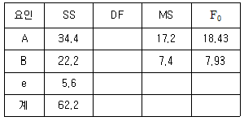
- 6
- 8
- 9
- 12
(정답률: 70%)
3. 변량요인 A로 반복수가 같은 1요인 실험에 대한 설명으로 맞는 것은?
- xij=μ+ai+bj+eij의 구조식을 갖는다.
- 분산분석표 작성 시 모수모형과는 작성방법이 다르다.
- 검정결과 유의하다면 산포의 정도를 알기위한
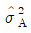
을 추정하는 데 의미가 있다. - 검정결과 유의하다면 요인의 각 수준에서의 모평균을 추정하는데 의미가 있다.
(정답률: 65%)
4. 1요인 실험(모수모형)의 데이터 구조식으로 맞는 것은?
- 분산 + 오차
- 분산 + 치우침
- 주효과 + 치우침
- 주효과 + 오차
(정답률: 80%)
5. 반복이 있는 2요인 실험의 조합조건마다의 모평균인 μ+ai+bj+(ab)ij의 추정치로 맞는 것은?
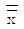
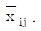
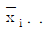
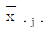
(정답률: 75%)
6. 특성치의 산포를 요인별로 분해하여 오차에 비해 특히 큰 영향을 주는 요인이 무엇인가를 찾아내는 분석방법을 무엇이라고 하는가?
- 분산분석
- 상관분석
- 회귀분석
- 반응표면분석
(정답률: 79%)
7. 단일 요인의 3수준에서 각각 4번의 관측치를 얻었다. 최소유의차(Least Significant Difference)의 식으로 맞는 것은?
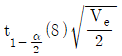
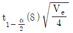
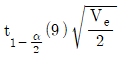
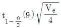
(정답률: 43%)
8. 요인 A가 모수인 1요인 실험의 분산분석표에서 수준 수 4, 반복수 5, ST=14.16, SA=10.10, Se=4.06일 때, F0값은 약 얼마인가?
- 2.488
- 9.951
- 13.268
- 15.755
(정답률: 62%)
9. 플라스틱제품의 강도에 미치는 영향을 알기 위하여 랜덤하게 실험일(B)을 2개의 블록으로 층별하여 난괴법으로 배치하였다. 다음은 가열온도(A) 3수준에서 제품강도를 측정한 결과이다. 블록별(B) 제곱할 SB는 약 얼마인가요?
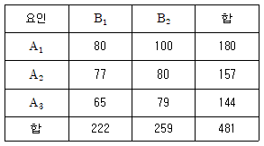
- 74.3
- 228.2
- 332.3
- 634.8
(정답률: 71%)
10. 2수준계 직교배열표에서 선점도를 이용한 배치에 대한 설명으로 틀린 것은?
- 선과 점은 각각 자유도 1을 갖는다.
- 점이나 선은 각각 하나의 열을 표시한다.
- 선점도는 주효과와 2,3요인 교호작용과의 관계를 표시한 것을 말한다.
- 점과 점은 각각 하나의 요인을, 그 점들을 연결하는 선은 그들의 교호작용 관계를 나타낸다.
(정답률: 61%)
11. L8(27)형 직교배열표에서 SA×C는?
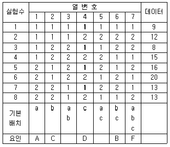
- 0
- 1
- 12
- 18
(정답률: 50%)
12. 모수요인인 온도의 각 수준은 실험자의 경험에 따라, 100, 120, 140℃ 3수준으로 실험하려고 한다. i 번째 수준에서 j 번째 반복 실험 결과인 xij에 대해 다음과 같은 모형을 설정하였다. 모형의 가정으로 맞는 것은?
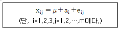
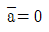
- ai≥0
- ∑ai≠0
- E(ai)=0
(정답률: 57%)
13. 요인 A가 4수준, 요인 B가 3수준으로 2요인 실험을 하다가 실험이 잘못되어 하나의 결측치가 생겼다. 결측치를 추정한 후 분산분석을 한 결과 Ve=0.041이었고,
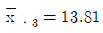
이라면 μ(B3)값을신뢰율 99%로 구간 추정하면 약 얼마인가? (단, t0.995(6)=3.707, t0.995(5)=4.032, t0.99(6)=3.143, t0.99(5)=3.365이다.)- 13.377≤μ(μ(B3)≤14.243
- 13.402≤μ(μ(B3)≤14.218
- 13.443≤μ(μ(B3)≤14.177
- 13.469≤μ(μ(B3)≤14.151
(정답률: 29%)
14. 반복이 일정하지 않은 1요인 실험의 모수모형의 데이터는 다음과 같다. 요인 A의 두 수준간의 모평균차 μ(A2)-μ(A3)의 95% 신뢰구간을 구하면?
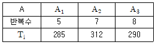
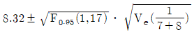
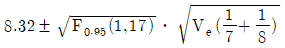
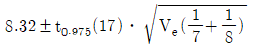
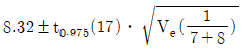
(정답률: 72%)
15. 단괴법에 관한 설명으로 틀린 것은?
- R. A. Fisher에 의하여 고안되었고 농사시험에서 유래되었다.
- 1요인은 모수요인이고, 1요인은 변량요인인 반복이 없는 2요인 실험이다,
- 요인 B(변량요인)인 경우 수준간의 산포를 구하는 것이 의미가 있고 모평균 추정은 의미가 없다.
- A(모수요인), B(블록요인)로 난괴법 실험을 행하는 층별이 잘 된 경우에 정보량이 적어지는 경향이 있다.
(정답률: 68%)
16. 1요인 실험에서 총 제곱합 ST=1.01이고, A요인의 순제곱합 S′A=0.40일 때, 기여율 ρA는 약 얼마인가?
- 39.6%
- 42.2%
- 44,4%
- 46.2%
(정답률: 64%)
17. 계수치 데이터를 설명한 것으로 틀린 것은?
- 교호작용을 확인하기 위해 직교배열표를 이용한다.
- 속성에 따라 분류되는 데이터(categorized data)도 계수치 데이터이다.
- 계수치 데이터 분석을 위해 Pearson의 적합도 검정을 사용하기도 한다.
- 적합품, 부적합품의 성질을 가지면서 일반적으로 0과 1의 값을 갖는다.
(정답률: 52%)
18. 각각 ℓ, m(ℓ,m ＞2)의 수준 수를 갖는 모수요인 A, B의 각 수준조합에서 r회 반복하여 실험하였고 결측치는 발생하지 않았다. A요인의 I번째 수준, B요인의 j번째 수준, 그리고 k번째 반복하여 측정한 특성치를 xijk이라 할 때, 교호작용의 제곱합 SA×B를 계산하는 식으로 맞은 것은?
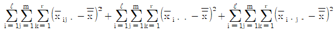
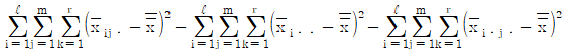
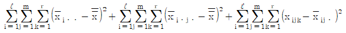
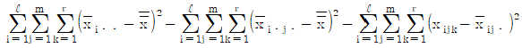
(정답률: 55%)
19. 교호작용을 무시하고, 실험횟수를 감소시키고자 할 경우 사용되는 실험계획법은?
- 난괴법
- 분할법
- 교락법
- 라틴방격법
(정답률: 71%)
20. 3×3 라틴방격법에서 각 요인의 모평균을 추정하는 식에 관한 내용으로 맞는 것은?
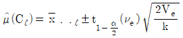
이다.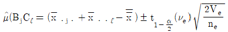
이다.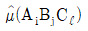
의 점추정식은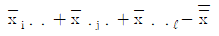
이다.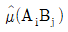
의 구간추정에 사용되는 유효반복수를 구하는 식은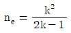
이다.
(정답률: 60%)
2과목: 통계적품질관리
21. 확률분포에 대한 설명으로 맞는 것은? (단, N은 로트의 크기, n은 시료의 크기, p는 부적합품률이다.)
- 푸아송분포의 표준편차는 √np로 표시할 수 있다.
- 이항분포에서 p≥0.1이면 정규분포에 근사한다.
- 초기하분포는 N이 크고, 복원추출 할 때 이용된다.
- 푸아송분포에서 n＜50, p＜0.1이면 초기하분포로 근사한다.
(정답률: 58%)
22. 산포를 검정할 때 χ2검정에 사용되는 통계량을 구하는 식은?
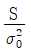
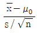
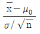
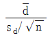
(정답률: 63%)
23. 두 변수간의 관계가 다음 그림과 같을 때를 의미하는 것은?
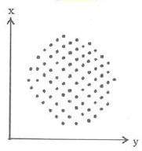
- 양상관
- 음상관
- 무상관
- 완전상관
(정답률: 69%)
24. 1주일 동안 어떤 기계에 의하여 생산된 200개 베어링의 반지름을 측정한 결과 표본평균 0.824㎝, 표본표준편차 0.042㎝를 얻었을 때, 베어링의 반지름 평균에 대한 99% 양측 신뢰구간은 약 얼마인가? (단, u0.975=1.96, u0.99=2.326, uu0.995=2.576이다.)
- 0.7653~0.8388
- 0.7864~0.8516
- 0.8163~0.8317
- 0.8171~0.8309
(정답률: 54%)
25. Y 유리공장에는 생산라인이 A, B 두 개가 있다. A 공정에서는 10m2당 기포의 수가 56개, B 공정에서는 10m2 당 기포의 수가 45일 때, A, B 두 공정의 기포수의 차를 검정하기 위한 검정통계량 u0의 값은 약 얼마인가?
- 1.095
- 1.778
- 1.895
- 1.943
(정답률: 49%)
26. X ~ N(μ, σ2)을 따를 때, 크기 n인 독립표본으로 모평균 μ를 추정하는 경우 사용하는 분포는?
- F분포
- 정규분포
- χ2분포
- 푸아송분포
(정답률: 64%)
27. 연속형 확률분포에 관한 설명 중 틀린 것은?
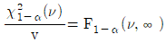
이다.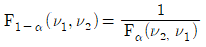
이다.- t분포에서 n이 ∞로 접근함에 따라 정규분포에 근사한다.
- t분포는 표본의 수가 적은 경우에 사용되며 산포 추정에 적용된다.
(정답률: 56%)
28.
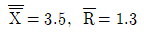
의 데이터로 합리적인 군구분에 의한 관리도의 UCL은 약 얼마임가? (단, n=4일 때 d2=2.⑤9이다.)
관리도의 UCL은 약 얼마임가? (단, n=4일 때 d2=2.⑤9이다.)- 1.607
- 4.320
- 4.447
- 6.394
(정답률: 43%)
29. p관리도와 np관리도에 대한 설명으로 틀린 것은?
- 모두 부적합품과 관련된 관리도이다.
- 모두 이항분포를 응용한 계량형 관리도이다.
- 부분군의 시료크기가 달라지면 p관리도의 관리한계도 달라진다.
- 부분군의 시료크기가 일정할 때만 np 관리도를 사용한다.
(정답률: 58%)
30. 가설검정시 제1종의 오류를 α, 제2종의 오류를 β라고 할 때, 검출력을 나타내는 것은?
- 1-α
- α-β
- 1-β
- β-α
(정답률: 64%)
31. 다음 데이터의 범위의 중간(mid-range point) 값은?
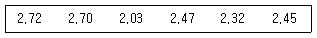
- 2.460
- 2.375
- 0.690
- 0.345
(정답률: 61%)
32. 검사의 목적이 아닌 것은?
- 우연원인을 제거한다.
- 품질정보를 제공한다.
- 고객에게 품질에 대한 안심감을 준다.
- 다음 공정이나 고객에게 부적합품이 넘어가는 것은 방지한다.
(정답률: 71%)
33. 샘플링과 관련된 용어의 해석으로 틀린 것은?
- LQ : 허용품질
- AQL : 합격품질한계
- AOQ : 평균출검품질
- AOQL : 평균출검품질한계
(정답률: 60%)
34. OC 곡선에서 n과 c를 일정하게 하고 N을 1000, 5000, ∞로 변환하게 했을 때, OC 곡선의 변화로 맞는 것은? (단, N/n≥10이다.)
- 거의 변하지 않는다.
- 곡선의 기울기가 완만해진다.
- 곡선의 기울기가 가파르게 된다.
- 로트의 크기가 달라지면 로트의 크기에 따라 OC 곡선이 변한다.
(정답률: 58%)
35. 계수형 샘플링검사 절찰 - 제1부 : 로트별 합격춤질한계(AQL) 지표형 샘플링검사 방식(KS Q ISO 2859 - 1:2014)에서 수월한 검사가 보통검사로 전환되는 경우가 아닌 것은?
- 생산이 불규칙
- 1로트가 불합격
- 전환점수가 30이상
- 기타 조건에서 전환이 필요
(정답률: 70%)
36.  관리도의 계수 중 A2를 나타내는 것은?
관리도의 계수 중 A2를 나타내는 것은?
- 3σ
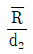
- 3/√n
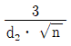
(정답률: 62%)
37. 일정면적의 부적합수를 관리하는 c관리도의 중심선(CL)이 16일 때, UCL과 LCL은?
- LCL=0, UCL=12
- LCL=0, UCL=28
- LCL=4, UCL=12
- LCL=4, UCL=28
(정답률: 69%)
38. 한 문제당 보기가 5개 있고, 그 중 정답은 하나뿐일 때, 10개의 문제 중 3개 문제의 정답을 맞힐 확률은 약 얼마인가?
- 0.3102
- 0.2013
- 0.0312
- 0.2152
(정답률: 57%)
39. R관리도는 안정되어 있고,
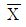
관리도에서 관리한계를 벗어나는 점이 많아지고 있을 때의 설명으로 맞는 것은? (단, 군내변동 : , 군간변동 :
, 군간변동 : 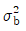
,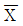
의 변동 : 이다.)
이다.) 는 작게 되고,
는 작게 되고,  는 크게 된다.
는 크게 된다.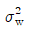
가 크게 되어 도 크게 된다
도 크게 된다 는 작게 되고,
는 작게 되고,  는 크게 된다.
는 크게 된다. 가 크게 되어
가 크게 되어 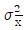
도 크게 된다.
(정답률: 57%)
40. 계수형 샘플링검사 절차 - 제1부 : 로트별 합격품질한계(AQL) 지표현 샘플링검사 방식(KS Q ISO 2859-1:2014)을 설명한 것으로 틀린 것은?
- 구매자가 연속로트라고 인정하는 경우 적용할 수 있다.
- 주 샘플링 보조표에 의한 보통검사는 Ac가 1/2, 1/3, 1/5의 검사가 있다.
- 분수 합격판정개수 샘플링검사는 소관권 한자가 승인하는 경우 적용할 수 있다.
- 주 샘플링표에 의한 검사와 분수 합격판 정개수가 적용되는 주 샘플링 보조표에 의한 검사가 있다,
(정답률: 60%)
3과목: 생산시스템
41. 4가지 부품을 1대의 기계에서 가공하고자 한다. 가공시간과 납기일은 다음과 같이 주어져 있다. 평균처리시간을 최소화하는 최단작업시간 규칙을 사용할 때 작업 순서로 맞는 것은?
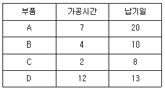
- A → D → B → C
- B → A → D → C
- C → B → A → D
- D → C → B → A
(정답률: 66%)
42. 단속공정의 일정계획은 일반적으로 3단계를 거친다. 3단계의 순서로 맞는 것은?
- 부하할당-작업순서의 결정-상세일정계획
- 부하할당-상세일정계획-작업순서의 결정
- 상세일정계획-부하할당-작업순서의 결정
- 상세일정계획-작업순서의 결정-부하할당
(정답률: 47%)
43. 1일 부하시간이 460분 1일 가동시간이 400분 1일 생산량을 300개이라 할 때, 설비종합효율은 약 얼마인가? (단, 이론주기시간 : 0.5분/개, 양품률 98%, 실제주기시간 : 0.8분/개이다.)
- 32%
- 40%
- 42%
- 50%
(정답률: 39%)
44. 일정계획의 주요 통제기능으로, 일정계획에 따라 작업이 순조롭게 진행되는가를 체크하는 것을 무엇이라고 하는가?
- 작업관리
- 공수관리
- 공정관리
- 진도관리
(정답률: 65%)
45. 주 공정선(Critical Path)에 대한 설명으로 맞는 것은?
- 공정단축 시 주 공정선상의 작업이 고려 되어야 한다.
- 주 공정선은 개시점부터 종료점까지의 최단시일 경로이다.
- 주 공정선상의 작업에서 여유시간은 일반적으로 0보다 크다.
- 주 공정선은 2개 이상 존재할 수도 있고, 존재하지 않을 수도 있다.
(정답률: 61%)
46. 표의 데이터를 참조하여 5개월 이동평균에 의한 8월의 판매 예측치는 약 얼마인가?
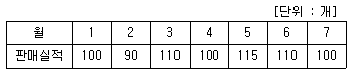
- 1⑤개
- 106개
- 107
- 108개
(정답률: 76%)
47. 공정을 계획하여 통제하는 기능을 함으로써 생산성과 효율을 향상시키는 공정관리에 관한 설명으로 틀린 것은?
- 개별 작업장의 작업순서를 결정하는 작업배정규칙에는 FCFS, SPT 등이 있다.
- 각 작업을 개시해서 완료할 때까지에 소요되는 표준적인 일정으로 일정계획의 기초가 되는 것을 기준일정이라고 한다.
- 여력관리는 주문생산에서와 같이 상세한 계획수립이 어렵고 계획변경이 빈번한 경우에 필요한 공정관리의 통제기능이다.
- 공정관리기능으로 통제기능에는 공수계획·절차계획·일정계획이 있으며, 계획기능으로는 작업배정·여력관리·진도관리가 있다.
(정답률: 58%)
48. 다음의 내용은 무엇에 대한 설명인가?
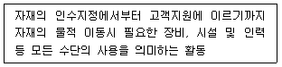
- 자재취급(Material Handling)
- 재고통제(Inventory Control)
- 선적기능(Shipping Function)
- 자원관리(Resource Management)
(정답률: 64%)
49. 라인밸런스 효율(Eb)를 구하는 공식은? (단, n: 작업장(공정) 수, tmax : cycle time, ∑ti : 공정시간의 합계이다.)
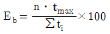
(정답률: 70%)
50. 감도가 높은 계측장치를 사용하여 기계나 설비의 트러블을 예측해서 이에 따른 예방보전 활동을 하는 것으로 기계설비가 자동화되어 있는 정치산업에서 특히 중요한 보전은?
- 자주보전
- 수리보전
- 개량보전
- 예지보전
(정답률: 63%)
51. Y자재의 단가는 200원, 연간소요량은 200개, 1회 발주비는 1000원, 재고유지비율이 20% 일 때, 연간 경제적 발주회수는?
- 1회
- 2회
- 5회
- 10회
(정답률: 53%)
52. 학습효과(learning effect)애 관한 설명으로 틀린 것은?(오류 신고가 접수된 문제입니다. 반드시 정답과 해설을 확인하시기 바랍니다.)
- 작업을 반복함에 따라 공수가 감소되는 현상을 의미한다.
- 학습률이 낮을수록 학습곡선은 완만하며 학습효과도 낮다.
- 새로운 작업의 시초에는 학습효과가 높고 시간이 지남에 따라 점차 줄어든다.
- 생산량이 누적되어 증가함에 따라 작업 소요시간은 지수함수로 감소된다.
(정답률: 53%)
53. 스톱워치법에서 관측방법 중 요소작업이 너무 짧아 개별적으로 측정할 수 없을 때, 몇 개의 다른 요소작업과 조합한 시간치를 산출하는 방법은?
- 반복법
- 계속법
- 누적법
- 순환법
(정답률: 57%)
54. 표준시간을 설정하는 과정에서 레이팅(정상화)작업을 필요로 하는 것은?
- WF 법에 의한 표준시간
- MTM 법에 의한 표준시간
- 스톱워치법에 의한 표준시간
- 표준자료법에 의한 표준시간
(정답률: 64%)
55. 소품종 대량생산의 특징으로 틀린 것은?
- 단위당 생산원가는 낮다.
- 전용설비에 의한 생산이 주가 된다.
- 작업자는 다양한 생산기술과 경험이 있어야 한다.
- 공정통제가 비교적 쉽고 중점관리 대상은 주로 재고관리가 된다.
(정답률: 80%)
56. 다음의 내용은 무엇에 대한 정의인가?
- FSM
- VE/VA
- SCM
- PERT/CPM
(정답률: 66%)
57. ABC 재고관리의 설명으로 틀린 것은?
- ABC 분석의 구체적 방법은 파레토 분석을 행한다.
- 차별적 관리방법을 위한 분류 기준을 가격으로 했을 경우 품목의 개당 단가를 많이 사용한다.
- 품목의 중요도를 결정하고, 품목의 상대적 중요도에 따라 통제를 달리하는 재고 분류시스템이다.
- 관리대상의 모든 품목을 가격, 사용량, 구입시 편의성 등을 기준으로 A급, B급, C급으로 분류하여 관리방법을 달리한다.
(정답률: 61%)
58. 테일러(F. W. Taylor)는 ‘하루의 공정한 작업량’을 시간연구를 통해 과학적으로 설정하고 관리하는 과학적 관리를 주장하였다. 하루의 공정한 작업량을 지칭하는 용어는?
- 과업
- 작업량
- 싸이클타임
- 과학량
(정답률: 70%)
59. JIT 생산시스템을 도입함으로써 기대되는 이익이 아닌 것은?
- 재고회전율의 개선
- 작업의 부하량 감소
- 생산로트크기의 축소
- 생산준비시간의 단축
(정답률: 48%)
60. 서블릭 기호 중 빈손의 이동(Transport Empty)을 나타내는 것은?
(정답률: 74%)
4과목: 품질경영
61. 산점도에 대한 설명으로 틀린 것은?
- 두 변수간의 관계를 파악할 때 사용한다.
- 두 변수간의 전반적인 윤곽을 그림을 통해 알 수 있다.
- 두 변수간의 상관관계의 긴밀함을 정량적으로 파악할 수 있다.
- 두 변수간의 상관관계의 파악에 앞서 층별할 필요는 없는지 확인한다.
(정답률: 62%)
62. 과실책임이 따르는 제조물 결함에 해당 하는 것은?
- 명시보증 위반
- 제조·가공상의 결함
- 판매자가 결함상품을 판매한 것
- 결함상품이 손해로 법적 관련성을 갖는 것
(정답률: 68%)
63. 규정 공차가 규격 상·하한으로 정해졌을 경우 규격상한(U) 밖으로 나타난 부적합품률은 0.13%이고, 규격하한(L) 밖으로 나타난 부적합품률이 0.18% 였다면, 부적합품률은 총 몇 ppm인가?
- 31ppm
- 310ppm
- 3100ppm
- 31000ppm
(정답률: 71%)
64. 국제표준화(ISO)의 공식 언어가 아닌 것은?
- 독일어
- 영어
- 러시아어
- 불어
(정답률: 75%)
65. 최고경영자에 의해 공식적으로 표명된 품질 관련 조직의 전반적인 의도 및 방향을 나타내는 것은?
- 품질경영
- 품질기획
- 품질방침
- 품질보증
(정답률: 70%)
66. n=3인 관리도에서 를 얻었다. 규격이 0.74±0.03인 경우에 ㅊ회소 공정능력지수 Cpk를 구하면 약 얼마인가? (단, n=3인 경우에 d2=1.693이다.)
- 0.56
- 0.87
- 1.00
- 1.33
(정답률: 32%)
67. 품질경영시스템 - 요구사항(KS Q ISO 9001 : 2015)에서 정의된 품질경영원칙에 해당되지 않는 것은?
- 리더십
- 프로세스 접근법
- 품질중시
- 증거기반 의사결정
(정답률: 56%)
68. 품질심사란 품질보증에 필요한 정보를 제공할 목적으로 여러 가지 관점에서 평가하는 독립적인 심사행위를 의미한다. 품질심사에 대한 설명으로 틀린 것은?
- 품질비용에 대한 심사를 의미한다.
- 제3자에 의해 품질활동을 평가한다.
- 기업에 의한 자체 품질활동을 평가한다.
- 협력업체에 대해 구매자가 품질활동을 평가한다.
(정답률: 58%)
69. 산업표준화로 인하여 얻을 수 있는 이점이 아닌 것은?
- 자동화
- 생산비 절감
- 호환성
- 다품종소량생산
(정답률: 74%)
70. 예방비용의 산출항목이 아닌 것은?
- 품질관리 교육비용
- 업무계획 추진비용
- 외주업체 지도비용
- 계측기 검·교정비용
(정답률: 70%)
71. 신 QC 7가지 방법에 해당되지 않는 것은?
- 파레토도법
- 연관도법
- 애로우도법
- 계통도법
(정답률: 72%)
72. 산업표준화법 시행규칙에서 광공업품 또는 서비스를 인증대상 품목 또는 서비스 분야로 지정해야 하는 경우가 아닌 것은?
- 원자재에 해당되지만 다른 산업에 전혀 영향을 미치지 않는 경우
- 독과점 또는 가격변동으로 품질이 크게 떨어질 것이 우려되는 경우
- 소비자의 보호 및 피해 방지를 위하여 한국산업표준에 맞는 것임을 표시할 필요가 있는 경우
- 품질을 식별하기가 쉽지 아니하여 소비자 보호를 위하여 한국산업표준에 맞는 것임을 표시할 필요가 있는 경우
(정답률: 70%)
73. 어떤 제품의 치수를 측정하는 공정에서 다음과 같은 값이 주어졌을 때 제품의 공차는?
- 1.5mm
- 2mm
- 3mm
- 4mm
(정답률: 62%)
74. 벤치마킹을 실시하는 목적으로 볼 수 없는 것은?
- 선진기술 및 정보 습득을 위해
- 제품이 출하된 뒤 사회에 끼치는 손실을 합리화하기 위해
- 가장 앞서가는 선진지표 발굴 및 적용을 통한 경영성과 비교를 위해
- 외부적 비교시간/고객중심의 시각에 기초한 의미있는 목표 및 업무 평가 기준의 구축을 위해
(정답률: 77%)
75. 어떤 회사가 사내 표준화를 준비하는 과정에서 지연 또는 방해요소가 아닌 것은?
- 조직상의 책임과 권한이 모호할 경우
- 사내표준을 적시에 개정관리하지 않는 경우
- 경영층이 사내표준에 대한 적극적인 관심이 없는 경우
- 업무절차에 대한 명확성이 절차가 성문화되어 있지 않을 경우
(정답률: 62%)
76. 표중의 서식과 작성방법(KS A 0001 : 2015)에서 그 앞에 있는 수치를 포함시키는 뜻을 가진 용어는?
- 초과
- 미만
- 이상
- 보다 큰
(정답률: 67%)
77. 게하니(Gehani)가 구상한 품질가치사슬 구조에서, 기본적 부가가치 활동이 전개되는 하층 기반부인 제품품질에 관한 사상으로 볼 수 없는 것은?
- 테일러의 검사품질
- 다구찌의 설계종합품질
- 이시가와의 예방종합품질
- 데밍의 공정관리 종합품질
(정답률: 59%)
78. 품질기능전개(QFD)의 이점이 아닌 것은?
- 고객이 원하는 품질을 조직이 정의할 수 있다.
- 조직이 실현해야 할 품질특성을 명확히 하고 공유할 수 있다.
- 시장의 요구조건과 비교하여 무엇이 조직의 문제인지 명확히 할 수 있다.
- 고객이 요구하는 현상을 타파하여 새로운 품질 요구사항을 정의할 수 있다.
(정답률: 61%)
79. 측정시스템의 평가를 R&R의 %값으로 할 때, 측정오차에 따른 평가기준으로 맞는 것은?
- 10% 이하 : 계측기 관리가 미흡하다.
- 10% 초과 30% 미만 : 계측기의 측정오차 등을 고려하여 조치 여부를 결정한다.
- 30% 초과 50% 미만 : 우수한 측정 시스템이다.
- 60% 초과 90% 미만 : 매우 우수한 측정 시스템이다.
(정답률: 68%)
80. 6시그마 측정단위 중에서 결함발생기회당 결함수(Defects Per Opportunity)의 의미로 맞는 것은? (문제 오류로 가답안 발표시 3번으로 발표되었으나, 확정답안 발표시 모두 정답처리 되었습니다. 여기서는 가답안인 3번을 누르면 정답 처리 됩니다.)
- 결함개수/제품단위당개수×1000000
- 제품단위당개수/결함개수×1000000
- 총결함발생기회수/총결함수×1000000
- 총결함수/총결함발생기회수×1000000
(정답률: 75%)